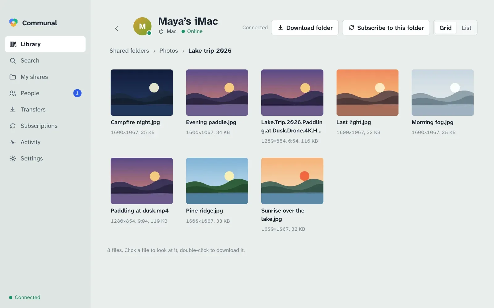
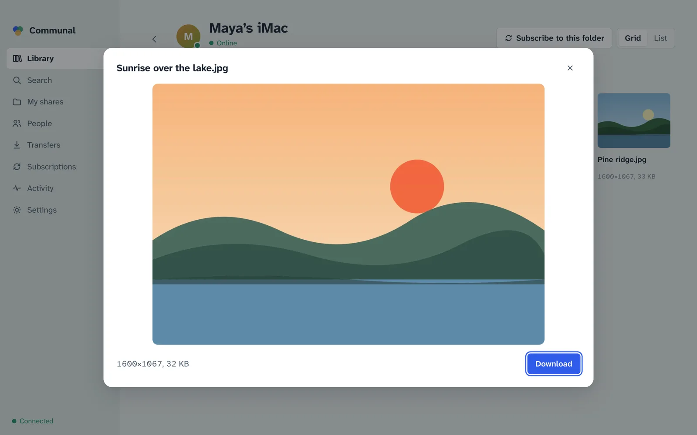
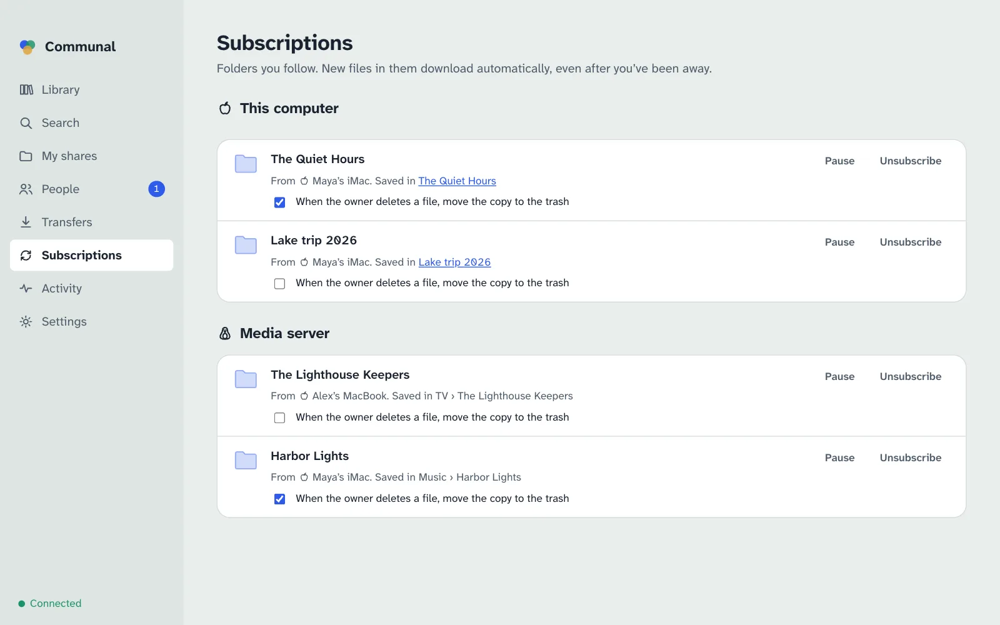
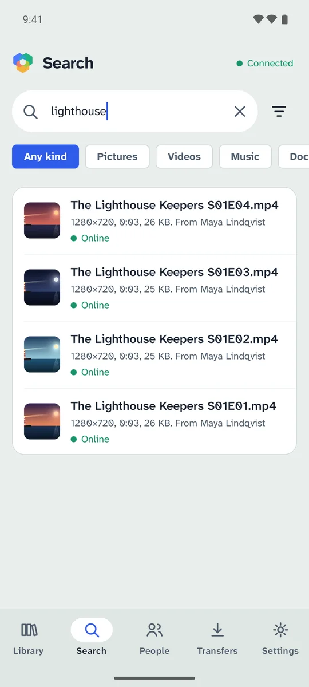
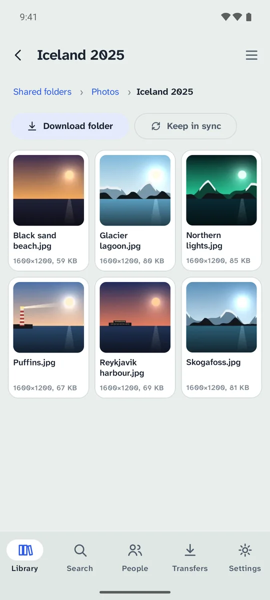
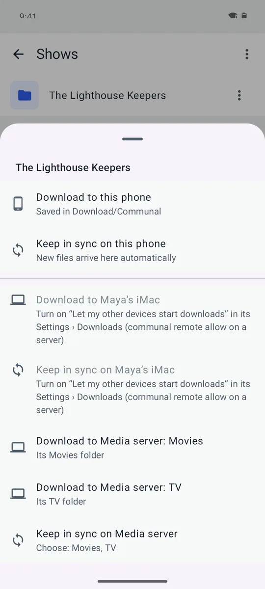
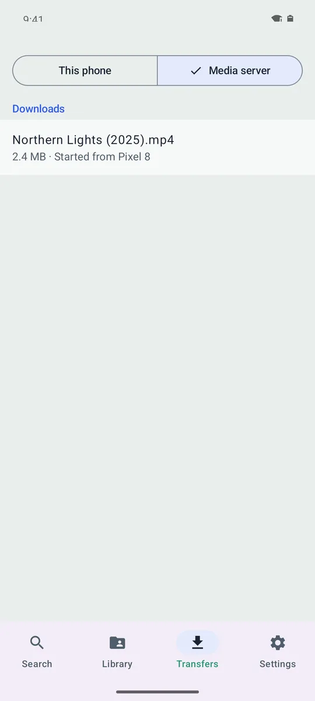

Look before you download
Thumbnails, photo details and video length come from the owner’s computer. Open a picture full size, read the start of a text file, or play a video or song without saving it first.
Communal lets friends, family and small groups share files straight from one computer to another. You choose who sees each folder. The files never sit on anyone else’s server.

A small server called a hub keeps the list of who is on it and what they share. When you download, the file comes directly from the computer that has it.
Someone in your group runs a hub and gives you its address. There’s no email and no password: your computer makes its own key the first time.
Pick a folder. It stays private until you choose who can see it: only you, particular people or groups, or everyone on the hub.
Browse people’s shared folders or search everything at once, including what people you haven’t met yet share with the whole hub. Files come straight from their computers, from several at once when more than one has them.
Thumbnails, photo details and video length come from the owner’s computer. Open a picture full size, read the start of a text file, or play a video or song without saving it first.

Every shared folder starts out visible only to you. Open it to particular people, to a group, or to everyone on a hub. Nobody can tell who else has access.

One search covers every hub you’re on. Each file shows up once however many people have it, with whether they’re online now.

Subscribe to a friend’s folder and new files arrive on their own, even after you’ve been away. You decide whether their deletions remove your copies, and the answer is no unless you say yes. A synced folder keeps one folder the same on all your own computers.

The Android app searches and browses everything shared with you, downloads to the phone, and keeps a folder in sync, like the music on your computer. It never shares the phone’s own files.


Found a film while you’re out? Have the media server at home download it straight into its Movies folder, or follow a friend’s folder of new episodes into TV. Your phone, laptop or the command line can ask any of your computers that allow it, and they only ever save into the folders you named.


Files and thumbnails travel only between the two computers, encrypted. The hub never stores them and never sees what you download.
The record of who downloaded what from you is kept on your computer only. Each person checks who they’re talking to with keys, not with the hub’s word for it.
Hubs are small and easy to run on a home server. Run one for your family, or join a friend’s, and look after it from the app. One app can be on several hubs at once.
Every screen, from first launch to recovery keys. Read the guide
Run Communal on a server or NAS with no screen. CLI reference
Let Claude or another assistant search, download and share for you. Set it up
Host a hub for your group on Linux or Docker. Hub guide